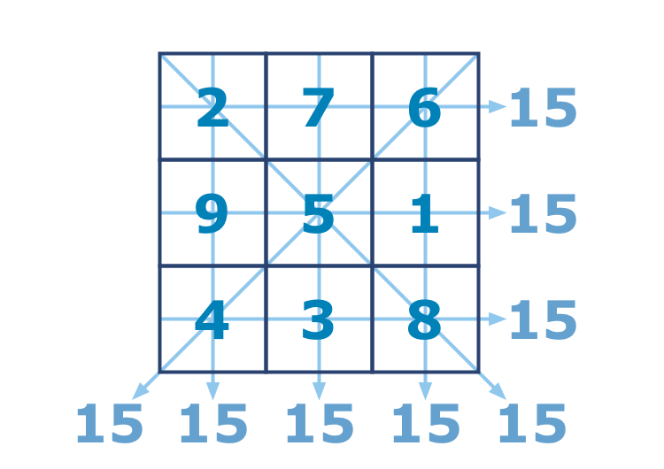

In mathematics a magic square is an arrangement of numbers (integers in our case) in a square grid, where the numbers in each row, each column and the numbers in the forward and backward main diagonals, all sum up to the same number.
You have been given an incomplete magic square (with a size from 3 to 5). With your coding skills, you must finish the square. It must be a normal magic square and contain integers from 1 to n2 without repeating. The square is presented as a list of lists with integers. Zero is used to mark an empty cell. You should return a completed magic square. The task may have multiple solutions.
Input: A partially filled magic square as a list of lists with integers.
Output: The completed magic square as a list of lists with integers.
Example:
checkio([
[2, 7, 6],
[9, 5, 1],
[4, 3, 0]
])
#must return [[2, 7, 6], [9, 5, 1], [4, 3, 8]]
checkio([[1, 15, 14, 4],
[12, 0, 0, 9],
[8, 0, 0, 5],
[13, 3, 2, 16]])
# answer [[1, 15, 14, 4], [12, 6, 7, 9], [8, 10, 11, 5], [13, 3, 2, 16]]
Precondition:
3 ≤ |square| ≤ 5square_width == square_height
Solution:
def checkio(data):
from copy import deepcopy
magicsum = {3:15, 4:34, 5:65}
dim = len(data)
magicsum = magicsum[dim]
def decompose(square):
output = {'rows': square, 'cols':[], 'diag1':[], 'diag2':[]}
dim = len(square)
for i in range(dim):
output['cols'].append([r[i] for r in square])
output['diag1'] = [square[i][i] for i in range(dim)]
output['diag2'] = [square[i][dim-i-1] for i in range(dim)]
return [output['rows'], output['cols'], output['diag1'], output['diag2']]
def fill(square):
rows, cols, diag1, diag2 = decompose(square)
for r in rows:
if r.count(0)==1:
square[rows.index(r)][r.index(0)] = magicsum - sum(r)
for c in cols:
if c.count(0)==1:
square[c.index(0)][cols.index(c)] = magicsum - sum(c)
if diag1.count(0)==1:
square[diag1.index(0)][diag1.index(0)] = magicsum - sum(diag1)
if diag2.count(0)==1:
square[diag2.index(0)][dim - diag2.index(0) - 1] = magicsum - sum(diag2)
return square
def check(square):
rows, cols, diag1, diag2 = decompose(square)
use = []
flag = 0
for r in rows:
use += r
if 0 in r:
flag = 1
continue
if sum(r)!=magicsum:
return 0
use = [n for n in use if n!=0]
for n in use:
if use.count(n)!=1 or not 1<=n<=len(rows)**2:
return 0
for c in cols:
if 0 in c:
flag = 1
continue
if sum(c)!=magicsum:
return 0
if 0 not in diag1 and sum(diag1)!=magicsum:
return 0
if 0 not in diag2 and sum(diag2)!=magicsum:
return 0
if flag:
return -1
return 1
def pngen(square):
dim = len(square)
plist = []
nlist = []
for i in range(dim):
for j in range(dim):
if square[i][j]!=0:
nlist.append(square[i][j])
elif i<dim-1 and j<dim-1:
plist.append([i, j])
nlist = [n for n in range(1,dim**2+1) if n not in nlist]
if plist==[]:
return -1
return [plist[-1], nlist]
banlist = []
sqstack = [data]
while 1:
sqold = deepcopy(sqstack[-1])
pn = pngen(sqold)
if pn==-1:
return fill(sqold)
else:
p, nlist = pn
flag = 1
for n in nlist:
sqnew = deepcopy(sqold)
sqnew[p[0]][p[1]] = n
if sqnew not in banlist:
flag = 0
break
if flag:
sqstack.pop()
banlist.append(sqold)
continue
ch = check(fill(deepcopy(sqnew)))
if ch==1:
return fill(sqnew)
elif ch==0:
banlist.append(sqnew)
else:
sqstack.append(sqnew)